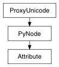

pymel.core.general.Attribute¶

- class Attribute(*args, **kwargs)¶
Attribute class
see pymel docs for details on usage
- FreeToChangeState = Enum( EnumValue('FreeToChangeState', 0, 'freeToChange'), EnumValue('FreeToChangeState', 1, 'notFreeToChange'), EnumValue('FreeToChangeState', 2, 'childrenNotFreeToChange'))¶
- MValueSelector = Enum( EnumValue('MValueSelector', 0, 'all'), EnumValue('MValueSelector', 1, 'nonDefault'), EnumValue('MValueSelector', 2, 'changed'), EnumValue('MValueSelector', 3, 'lastAttrSelector'))¶
- affected(**kwargs)¶
- affects(**kwargs)¶
- array()¶
Returns the array (multi) attribute of the current element:
>>> n = Attribute(u'initialShadingGroup.groupNodes[0]') >>> n.isElement() True >>> n.array() Attribute(u'initialShadingGroup.groupNodes')
This method will raise an error for attributes which are not elements of an array:
>>> m = Attribute(u'initialShadingGroup.groupNodes') >>> m.isElement() False >>> m.array() Traceback (most recent call last): ... TypeError: initialShadingGroup.groupNodes is not an array (multi) attribute
Return type: Attribute
- attrItemReg = <_sre.SRE_Pattern object at 0x13efaa780>¶
- attrName(longName=False, includeNode=False)¶
Just the name of the attribute for this plug
This will have no indices, no parent attributes, etc... This is suitable for use with cmds.attributeQuery
>>> at = SCENE.persp.instObjGroups.objectGroups >>> at.name() u'persp.instObjGroups[-1].objectGroups' >>> at.attrName() u'og' >>> at.attrName(longName=True) u'objectGroups'
- connect(source, destination, **kwargs)¶
Connect the attributes of two dependency nodes and return the names of the two connected attributes. The connected attributes must be be of compatible types. First argument is the source attribute, second one is the destination. Refer to dependency node documentation.
- Maya Bug Fix:
- even with the ‘force’ flag enabled, the command would raise an error if the connection already existed.
Flags:
Long Name / Short Name Argument Types Properties force / f bool 
- Forces the connection. If the destination is already connected, the old connection is broken and the new one made.
lock / l bool
If the argument is true, the destination attribute is locked after making the connection. If the argument is false, the connection is unlocked before making the connection.
nextAvailable / na bool
If the destination multi-attribute has set the indexMatters to be false with this flag specified, a connection is made to the next available index. No index need be specified.
referenceDest / rd unicode
This flag is used for file io only. The flag indicates that the connection replaces a connection made in a referenced file, and the flag argument indicates the original destination from the referenced file. This flag is used so that if the reference file is modified, maya can still attempt to make the appropriate connections in the main scene to the referenced object. Flag can have multiple arguments, passed either as a tuple or a list.
Derived from mel command maya.cmds.connectAttr
Example:
import pymel.core as pm pm.createNode( 'transform', n='firstGuy' ) # Result: nt.Transform(u'firstGuy') # pm.createNode( 'transform', n='secondGuy' ) # Result: nt.Transform(u'secondGuy') # # Connect the translation of two nodes together pm.connectAttr( 'firstGuy.t', 'secondGuy.translate' ) # Connect the rotation of one node to the override colour # of a second node. pm.connectAttr( 'firstGuy.rotate', 'secondGuy.overrideColor' )
- delete()¶
deleteAttr
- disconnect(source, destination=None, inputs=None, outputs=None, **kwargs)¶
Disconnects two connected attributes. First argument is the source attribute, second is the destination.
- Modifications:
- If no destination is passed, then all inputs will be disconnected if inputs
is True, and all outputs will be disconnected if outputs is True; if neither are given (or both are None), both all inputs and all outputs will be disconnected
Flags:
Long Name / Short Name Argument Types Properties nextAvailable / na bool
If the destination multi-attribute has set the indexMatters to be false, the command will disconnect the first matching connection. No index needs to be specified. Flag can have multiple arguments, passed either as a tuple or a list.
Derived from mel command maya.cmds.disconnectAttr
Example:
import pymel.core as pm # Create a sphere and cone and connect their rotate attribute. # sph = pm.sphere() con = pm.cone() sphereR = '%s.r' % sph[0] coneR = '%s.r' % con[0] pm.connectAttr(sphereR, coneR) # Break the connection between the rotate attributes. # pm.disconnectAttr(sphereR, coneR)
- elementByLogicalIndex(index)¶
This method will find and return a plug with the given logical index. The logical index is the sparse array index used in MEL scripts. If a plug does not exist at the given Index, Maya will create a plug at that index. This is not the case with elementByPhysicalIndex() . If needed, elementByLogicalIndex can be used to expand an array plug on a node. It is important to note that Maya assumes that all such plugs serve a purpose and it will not free non-networked plugs that result from such an array expansion.
Parameters: - index : int
The index of the plug to be found
Return type: Derived from api method maya.OpenMaya.MPlug.elementByLogicalIndex
- elementByPhysicalIndex(index)¶
This method will find and return a plug with the given physical index. The index can range from 0 to numElements() - 1. This function is particularly useful for iteration through the element plugs of an array plug. It is equivalent to operator [] (int) This method is only valid for array plugs.
Parameters: - index : int
The physical array index of the plug to be found
Return type: Derived from api method maya.OpenMaya.MPlug.elementByPhysicalIndex
- elements()¶
listAttr -multi
Return a list of strings representing all the attributes in the array.
If you don’t need actual strings, it is recommended that you simply iterate through the elements in the array. See Attribute.__iter__.
- Modifications:
- returns an empty list when the result is None
- evaluate(**kwargs)¶
- evaluateNumElements()¶
Return the total number of elements in the datablock of this array plug. The return count will include both connected and non-connected elements, and will perform an evaluate in order to make sure that the datablock is as up-to-date as possible since some nodes do not place array elements into the datablock until the attribute is evaluated.
Return type: int Derived from api method maya.OpenMaya.MPlug.evaluateNumElements
- exists()¶
Whether the attribute actually exists.
In spirit, similar to ‘attributeQuery -exists’... ...however, also handles multi (array) attribute elements, such as plusMinusAverage.input1D[2]
Return type: bool
- firstParent(*args, **kwargs)¶
The function ‘pymel.core.general.Attribute.firstParent’ is deprecated and will become unavailable in future pymel versions. use Attribute.getParent instead
deprecated: use getParent instead
- get(attr, default=None, **kwargs)¶
This command returns the value of the named object’s attribute. UI units are used where applicable. Currently, the types of attributes that can be displayed are: numeric attributesstring attributesmatrix attributesnumeric compound attributes (whose children are all numeric)vector array attributesdouble array attributesint32 array attributespoint array attributesdata component list attributesOther data types cannot be retrieved. No result is returned if the attribute contains no data.
- Maya Bug Fix:
- maya pointlessly returned vector results as a tuple wrapped in a list ( ex. ‘[(1,2,3)]’ ). This command unpacks the vector for you.
- Modifications:
- casts double3 datatypes to Vector
- casts matrix datatypes to Matrix
- casts vectorArrays from a flat array of floats to an array of Vectors
- when getting a multi-attr, maya would raise an error, but pymel will return a list of values for the multi-attr
- added a default argument. if the attribute does not exist and this argument is not None, this default value will be returned
- added support for getting message attributes
Flags:
Long Name / Short Name Argument Types Properties asString / asString bool
This flag is only valid for enum attributes. It allows you to get the attribute values as strings instead of integer values. Note that the returned string value is dependent on the UI language Maya is running in (about -uiLanguage).
caching / ca bool
- Returns whether the attribute is set to be cached internally
channelBox / cb bool
- Returns whether the attribute is set to show in the channelBox. Keyable attributes also show in the channel box.
expandEnvironmentVariables / x bool
- Expand any environment variable and (tilde characters on UNIX) found in string attributes which are returned.
keyable / k bool
- Returns the keyable state of the attribute.
lock / l bool
- Returns the lock state of the attribute.
multiIndices / mi bool
If the attribute is a multi, this will return a list containing all of the valid indices for the attribute. Flag can have multiple arguments, passed either as a tuple or a list.
settable / se bool
Returns 1 if this attribute is currently settable by setAttr, 0 otherwise. An attribute is settable if it’s not locked and either not connected, or has only keyframed animation.
silent / sl bool
When evaluating an attribute that is not a numeric or string value, suppress the error message saying that the data cannot be displayed. The attribute will be evaluated even though its data cannot be displayed. This flag does not suppress all error messages, only those that are benign.
size / s bool
- Returns the size of a multi-attribute array. Returns 1 if non-multi.
time / t time
- Evaluate the attribute at the given time instead of the current time.
type / typ bool
Returns the type of data currently in the attribute. Attributes of simple types such as strings and numerics always contain data, but attributes of complex types (arrays, meshes, etc) may contain no data if none has ever been assigned to them. When this happens the command will return with no result: not an empty string, but no result at all. Attempting to directly compare this non-result to another value or use it in an expression will result in an error, but you can assign it to a variable in which case the variable will be set to the default value for its type (e.g. an empty string for a string variable, zero for an integer variable, an empty array for an array variable). So to be safe when using this flag, always assign its result to a string variable, never try to use it directly.
Derived from mel command maya.cmds.getAttr
Example:
import pymel.core as pm pm.createNode( 'revolve', n='gravityWell' ) # Result: nt.Revolve(u'gravityWell') # pm.sphere( n='loxTank' ) # Result: [nt.Transform(u'loxTank'), nt.MakeNurbSphere(u'makeNurbSphere1')] # pm.cone( n='noseCone' ) # Result: [nt.Transform(u'noseCone'), nt.MakeNurbCone(u'makeNurbCone1')] # pm.cone( n='fin' ) # Result: [nt.Transform(u'fin'), nt.MakeNurbCone(u'makeNurbCone2')] # pm.pointConstraint( 'fin', 'noseCone', n='weld' ) # Result: nt.PointConstraint(u'weld') # angle = pm.getAttr('gravityWell.esw') type = pm.getAttr('loxTank.translate',type=True) lock = pm.getAttr('noseCone.translateX',lock=True) finZ = pm.getAttr('fin.translateZ',time=12) size = pm.getAttr('weld.target',size=True) size = pm.getAttr('weld.target',settable=True) matrix = pm.getAttr('loxTank.matrix') pm.createNode('file',n='file1') # Result: nt.File(u'file1') # pm.setAttr( 'file1.ftn', '$TMPDIR/smile.gif',type='string' ) s = pm.getAttr('file1.ftn') s = pm.getAttr('file1.ftn',x=True) # Get the list of all used indices on a multi attribute pm.getAttr('initialShadingGroup.dagSetMembers', multiIndices=True) # Result: [0, 1, 2] #
- getAlias(**kwargs)¶
Returns the alias for this attribute, or None.
The alias of the attribute is set through Attribute.setAlias, or the aliasAttr command.
- getAllParents(arrays=False)¶
Return a list of all parents above this.
Starts from the parent immediately above, going up.
Return type: Attribute list
- getArrayIndices()¶
Get all set or connected array indices. Raises an error if this is not an array Attribute
Return type: int list
- getEnums(attr)¶
Return type: util.enum.EnumDict >>> addAttr( "persp", ln='numbers', at='enum', enumName="zero:one:two:thousand=1000:three") >>> numbers = Attribute('persp.numbers').getEnums() >>> sorted(numbers.items()) [(u'one', 1), (u'thousand', 1000), (u'three', 1001), (u'two', 2), (u'zero', 0)] >>> numbers[1] u'one' >>> numbers['thousand'] 1000
- getMax()¶
- attributeQuery -max
- Returns None if max does not exist.
Return type: float
- getMin()¶
- attributeQuery -min
- Returns None if min does not exist.
Return type: float
- getNumElements()¶
Return the total number of elements in the datablock of this array plug. The return count will include all existing non-connected elements plus connected elements if they have been evaluated. It will not include connected elements that have not yet been placed into the datablock. The method MPlug::evaluateNumElements can be used in the sitution where you want an accurate count that includes all connected elements.
Return type: int Derived from api method maya.OpenMaya.MPlug.numElements
- getParent(generations=1, arrays=False)¶
- Modifications:
added optional generations keyword arg, which gives the number of levels up that you wish to go for the parent
Negative values will traverse from the top.
A value of 0 will return the same node. The default value is 1.
If generations is None, it will be interpreted as ‘return all parents’, and a list will be returned.
Since the original command returned None if there is no parent, to sync with this behavior, None will be returned if generations is out of bounds (no IndexError will be thrown).
added optional arrays keyword arg, which if True, will also traverse from an array element to an array plug
Return type: Attribute
- getRange()¶
- attributeQuery -range
- returns a two-element list containing min and max. if the attribute does not have a softMin or softMax the corresponding element will be set to None.
Return type: float
- getSoftMax()¶
- attributeQuery -softMax
- Returns None if softMax does not exist.
Return type: float
- getSoftMin()¶
- attributeQuery -softMin
- Returns None if softMin does not exist.
Return type: float
- getSoftRange()¶
- attributeQuery -softRange
- returns a two-element list containing softMin and softMax. if the attribute does not have a softMin or softMax the corresponding element in the list will be set to None.
Return type: [float, float]
- index()¶
Returns the logical index of the element this plug refers to. The logical index is a sparse index, equivalent to the array index used in MEL.
Return type: int Derived from api method maya.OpenMaya.MPlug.logicalIndex
- indexMatters()¶
- info()¶
This method returns a string containing the name of the node this plug belongs to and the attributes that the plug refers to. The string is of the form dependNode:atr1.atr2[].attr3 ...
Return type: unicode Derived from api method maya.OpenMaya.MPlug.info
- inputs(**kwargs)¶
listConnections -source 1 -destination 0
see Attribute.connections for the full ist of flags.
Return type: PyNode list
- insertInput(node, nodeOutAttr, nodeInAttr)¶
connect the passed node.outAttr to this attribute and reconnect any pre-existing connection into node.inAttr. if there is no pre-existing connection, this method works just like connectAttr.
for example, for two nodes with the connection:
a.out-->b.in
running this command:
b.in.insertInput( 'c', 'out', 'in' )
causes the new connection order (assuming ‘c’ is a node with ‘in’ and ‘out’ attributes):
a.out-->c.in c.out-->b.in
- isArray()¶
This method determines if the plug is an array plug. Array plugs refer to array attributes and contain element plugs.
Return type: bool Derived from api method maya.OpenMaya.MPlug.isArray
- isCaching()¶
Returns true if this plug or its attribute has its caching flag set.
Return type: bool Derived from api method maya.OpenMaya.MPlug.isCachingFlagSet
- isChild()¶
This method determines if the plug is a child plug. A child plug’s parent is always a compound plug.
Return type: bool Derived from api method maya.OpenMaya.MPlug.isChild
- isCompound()¶
This method determines if the plug is a compound plug. Compound plugs refer to compound attributes and have child plugs.
Return type: bool Derived from api method maya.OpenMaya.MPlug.isCompound
- isConnectable()¶
attributeQuery -connectable
Return type: bool
- isConnected()¶
Determines if this plug is connected to one or more plugs.
Return type: bool Derived from api method maya.OpenMaya.MPlug.isConnected
- isConnectedTo(other, ignoreUnitConversion=False, checkLocalArray=False, checkOtherArray=False)¶
Determine if the attribute is connected to the passed attribute.
If checkLocalArray is True and the current attribute is a multi/array, the current attribute’s elements will also be tested.
If checkOtherArray is True and the passed attribute is a multi/array, the passed attribute’s elements will also be tested.
If checkLocalArray and checkOtherArray are used together then all element combinations will be tested.
- isDestination()¶
Determines if this plug is connected as a destination.
Return type: bool Derived from api method maya.OpenMaya.MPlug.isDestination
- isDirty(**kwargs)¶
Return type: bool
- isDynamic()¶
Determines whether the attribute is of dynamic type or not.
Return type: bool Derived from api method maya.OpenMaya.MPlug.isDynamic
- isElement()¶
This method determines if the plug is an element plug. Element plugs refer to array attributes and are members of array plugs.
Return type: bool Derived from api method maya.OpenMaya.MPlug.isElement
- isFreeToChange(checkParents=True, checkChildren=True)¶
Returns true if the plug’s value is allowed to be set directly. A plug isFreeToChange if it is not locked, and it is not a destination or if it is a destination, then it must be a special case (such as connected to an anim curve).
Parameters: - checkParents : bool
Check parent plugs.
- checkChildren : bool
Check child plugs.
Return type: Derived from api method maya.OpenMaya.MPlug.isFreeToChange
- isFromReferencedFile()¶
This method determines whether this plug came from a referenced file. A plug is considered to have come from a referenced file if it is connected and that connection was made within a referenced file.
Return type: bool Derived from api method maya.OpenMaya.MPlug.isFromReferencedFile
- isHidden()¶
attributeQuery -hidden
Return type: bool
- isIgnoredWhenRendering()¶
Determines whether a connection to the attribute should be ignored during rendering.
Return type: bool Derived from api method maya.OpenMaya.MPlug.isIgnoredWhenRendering
- isInChannelBox()¶
Returns true if this plug or its attribute has its channel box flag set. Attributes will appear in the channel box if their channel box flag is set or if they are keyable.
Return type: bool Derived from api method maya.OpenMaya.MPlug.isChannelBoxFlagSet
- isKeyable()¶
Determines if this plug is keyable. The default keyability of a plug is determined by its attribute, and can be retrieved using MFnAttribute::isKeyable . Keyable plugs will be keyed by AutoKey and the Set Keyframe UI. Non-keyable plugs prevent the user from setting keys via the obvious UI provided for keying. Being non-keyable is not a hard block against adding keys to an attribute.
Return type: bool Derived from api method maya.OpenMaya.MPlug.isKeyable
- isLocked()¶
Determines the locked state of this plug’s value. A plug’s locked state determines whether or not the plug’s value can be changed.
Return type: bool Derived from api method maya.OpenMaya.MPlug.isLocked
- isMulti()¶
This method determines if the plug is an array plug. Array plugs refer to array attributes and contain element plugs.
Return type: bool Derived from api method maya.OpenMaya.MPlug.isArray
- isMuted()¶
mute -q
Return type: bool
- isNetworked()¶
This method determines if the plug is networked or non-networked.
Return type: bool Derived from api method maya.OpenMaya.MPlug.isNetworked
- isNull()¶
This method determines whether this plug is valid. A plug is valid if it refers to an attribute.
Return type: bool Derived from api method maya.OpenMaya.MPlug.isNull
- isProcedural()¶
This method determines if the plug is a procedural plug. A procedural plug is one which is created by Maya’s internal procedures or by the nodes themselves and which should not be saved to or restored from files.
Return type: bool Derived from api method maya.OpenMaya.MPlug.isProcedural
- isSettable()¶
getAttr -settable
Return type: bool
- isSource()¶
Determines if this plug is connected as a source.
Return type: bool Derived from api method maya.OpenMaya.MPlug.isSource
- isUsedAsColor()¶
attributeQuery -usedAsColor
- item()¶
Returns the logical index of the element this plug refers to. The logical index is a sparse index, equivalent to the array index used in MEL.
Return type: int Derived from api method maya.OpenMaya.MPlug.logicalIndex
- iterDescendants(levels=None, leavesOnly=False)¶
Yields all attributes “below” this attribute, recursively, traversing down both through multi/array elements, and through compound attribute children.
- levels : int or None
- the number of levels deep to descend; each descent from an array to an array element, and from a compound to it’s child, counts as one level (so, if you have a compound-multi attr parentAttr, to get to parentAttr[0].child would require levels to be at least 2); None means no limit
- leavesOnly : bool
- if True, then results will only be returned if they do not have any children to recurse into (either because it’s not an arry or compound, or because we’ve hit the levels limit)
- lastPlugAttr(longName=False)¶
>>> from pymel.core import * >>> at = SCENE.persp.t.tx >>> at.lastPlugAttr(longName=False) u'tx' >>> at.lastPlugAttr(longName=True) u'translateX'
Return type: unicode
- lock(checkReference=False)¶
setAttr -locked 1
- logicalIndex()¶
Returns the logical index of the element this plug refers to. The logical index is a sparse index, equivalent to the array index used in MEL.
Return type: int Derived from api method maya.OpenMaya.MPlug.logicalIndex
- longName(fullPath=False)¶
>>> from pymel.core import * >>> at = SCENE.persp.t.tx >>> at.longName(fullPath=False) u'translateX' >>> at.longName(fullPath=True) u'translate.translateX'
Return type: unicode
- mute(**kwargs)¶
Mutes the attribute.
- name(includeNode=True, longName=True, fullAttrPath=False, fullDagPath=False, placeHolderIndices=True)¶
Returns the name of the attribute (plug)
>>> tx = SCENE.persp.t.tx >>> tx.name() u'persp.translateX' >>> tx.name(includeNode=False) u'translateX' >>> tx.name(longName=False) u'persp.tx' >>> tx.name(fullAttrPath=True, includeNode=False) u'translate.translateX'
>>> vis = SCENE.perspShape.visibility >>> vis.name() u'perspShape.visibility' >>> vis.name(fullDagPath=True) u'|persp|perspShape.visibility'
>>> og = SCENE.persp.instObjGroups.objectGroups >>> og.name() u'persp.instObjGroups[-1].objectGroups' >>> og.name(placeHolderIndices=False) u'persp.instObjGroups.objectGroups'
Return type: unicode
- namespace(*args, **kwargs)¶
- node()¶
plugNode
Return type: DependNode
- nodeName()¶
The node part of this plug as a string
Return type: unicode
- numChildren()¶
Return the total number of children of this compound plug.
Return type: int Derived from api method maya.OpenMaya.MPlug.numChildren
- numConnectedChildren()¶
Return the number of children of this plug that are connected in the dependency graph.
Return type: int Derived from api method maya.OpenMaya.MPlug.numConnectedChildren
- numConnectedElements()¶
Return the total number of connected element plugs belonging to this array plug.
Return type: int Derived from api method maya.OpenMaya.MPlug.numConnectedElements
- numElements()¶
The number of elements in an array attribute. Raises an error if this is not an array Attribute
Be aware that getAttr(..., size=1) does not always produce the expected value. It is recommend that you use Attribute.numElements instead. This is a maya bug, not a pymel bug.
>>> from pymel.core import * >>> f=newFile(f=1) #start clean >>> >>> dls = SCENE.defaultLightSet >>> dls.dagSetMembers.numElements() 0 >>> nt.SpotLight() # create a light, which adds to the lightSet nt.SpotLight(u'spotLightShape1') >>> dls.dagSetMembers.numElements() 1 >>> nt.SpotLight() # create another light, which adds to the lightSet nt.SpotLight(u'spotLightShape2') >>> dls.dagSetMembers.numElements() 2
Return type: int
- outputs(**kwargs)¶
listConnections -source 0 -destination 1
see Attribute.connections for the full ist of flags.
Return type: PyNode list
- parent(generations=1, arrays=False)¶
- Modifications:
added optional generations keyword arg, which gives the number of levels up that you wish to go for the parent
Negative values will traverse from the top.
A value of 0 will return the same node. The default value is 1.
If generations is None, it will be interpreted as ‘return all parents’, and a list will be returned.
Since the original command returned None if there is no parent, to sync with this behavior, None will be returned if generations is out of bounds (no IndexError will be thrown).
added optional arrays keyword arg, which if True, will also traverse from an array element to an array plug
Return type: Attribute
- plugAttr(longName=False, fullPath=False)¶
>>> from pymel.core import * >>> at = SCENE.persp.t.tx >>> at.plugAttr(longName=False, fullPath=False) u'tx' >>> at.plugAttr(longName=False, fullPath=True) u't.tx' >>> at.plugAttr(longName=True, fullPath=True) u'translate.translateX'
Return type: unicode
- plugNode()¶
Return type: DependNode
- remove(**kwargs)¶
removeMultiInstance
- removeMultiInstance(index=None, break_=False)¶
- set(attr, *args, **kwargs)¶
Sets the value of a dependency node attribute. No value for the the attribute is needed when the -l/-k/-s flags are used. The -type flag is only required when setting a non-numeric attribute. The following chart outlines the syntax of setAttr for non-numeric data types: TYPEbelow means any number of values of type TYPE, separated by a space[TYPE]means that the value of type TYPEis optionalA|Bmeans that either of Aor Bmay appearIn order to run its examples, first execute these commands to create the sample attribute types:sphere -n node; addAttr -ln short2Attr -at short2; addAttr -ln short2a -p short2Attr -at short; addAttr -ln short2b -p short2Attr -at short; addAttr -ln short3Attr -at short3; addAttr -ln short3a -p short3Attr -at short; addAttr -ln short3b -p short3Attr -at short; addAttr -ln short3c -p short3Attr -at short; addAttr -ln long2Attr -at long2; addAttr -ln long2a -p long2Attr -at long; addAttr -ln long2b -p long2Attr -at long; addAttr -ln long3Attr -at long3; addAttr -ln long3a -p long3Attr -at long; addAttr -ln long3b -p long3Attr -at long; addAttr -ln long3c -p long3Attr -at long; addAttr -ln float2Attr -at float2; addAttr -ln float2a -p float2Attr -at float; addAttr -ln float2b -p float2Attr -at float; addAttr -ln float3Attr -at float3; addAttr -ln float3a -p float3Attr -at float; addAttr -ln float3b -p float3Attr -at float; addAttr -ln float3c -p float3Attr -at float; addAttr -ln double2Attr -at double2; addAttr -ln double2a -p double2Attr -at double; addAttr -ln double2b -p double2Attr -at double; addAttr -ln double3Attr -at double3; addAttr -ln double3a -p double3Attr -at double; addAttr -ln double3b -p double3Attr -at double; addAttr -ln double3c -p double3Attr -at double; addAttr -ln int32ArrayAttr -dt Int32Array; addAttr -ln doubleArrayAttr -dt doubleArray; addAttr -ln pointArrayAttr -dt pointArray; addAttr -ln vectorArrayAttr -dt vectorArray; addAttr -ln stringArrayAttr -dt stringArray; addAttr -ln stringAttr -dt string; addAttr -ln matrixAttr -dt matrix; addAttr -ln sphereAttr -dt sphere; addAttr -ln coneAttr -dt cone; addAttr -ln meshAttr -dt mesh; addAttr -ln latticeAttr -dt lattice; addAttr -ln spectrumRGBAttr -dt spectrumRGB; addAttr -ln reflectanceRGBAttr -dt reflectanceRGB; addAttr -ln componentListAttr -dt componentList; addAttr -ln attrAliasAttr -dt attributeAlias; addAttr -ln curveAttr -dt nurbsCurve; addAttr -ln surfaceAttr -dt nurbsSurface; addAttr -ln trimFaceAttr -dt nurbsTrimface; addAttr -ln polyFaceAttr -dt polyFaces; -type short2Array of two short integersValue Syntaxshort shortValue Meaningvalue1 value2Mel ExamplesetAttr node.short2Attr -type short2 1 2;Python Examplecmds.setAttr(‘node.short2Attr’,1,2,type=’short2’)-type short3Array of three short integersValue Syntaxshort short shortValue Meaningvalue1 value2 value3Mel ExamplesetAttr node.short3Attr -type short3 1 2 3;Python Examplecmds.setAttr(‘node.short3Attr’,1,2,3,type=’short3’)-type long2Array of two long integersValue Syntaxlong longValue Meaningvalue1 value2Mel ExamplesetAttr node.long2Attr -type long2 1000000 2000000;Python Examplecmds.setAttr(‘node.long2Attr’,1000000,2000000,type=’long2’)-type long3Array of three long integersValue Syntaxlong long longValue Meaningvalue1 value2 value3Mel ExamplesetAttr node.long3Attr -type long3 1000000 2000000 3000000;Python Examplecmds.setAttr(‘node.long3Attr’,1000000,2000000,3000000,type=’long3’)-type Int32ArrayVariable length array of long integersValue SyntaxValue MeaningMel ExamplesetAttr node.int32ArrayAttr -type Int32Array 2 12 75;Python Examplecmds.setAttr(‘node.int32ArrayAttr’,[2,12,75],type=’Int32Array’)-type float2Array of two floatsValue Syntaxfloat floatValue Meaningvalue1 value2Mel ExamplesetAttr node.float2Attr -type float2 1.1 2.2;Python Examplecmds.setAttr(‘node.float2Attr’,1.1,2.2,type=’float2’)-type float3Array of three floatsValue Syntaxfloat float floatValue Meaningvalue1 value2 value3Mel ExamplesetAttr node.float3Attr -type float3 1.1 2.2 3.3;Python Examplecmds.setAttr(‘node.float3Attr’,1.1,2.2,3.3,type=’float3’)-type double2Array of two doublesValue Syntaxdouble doubleValue Meaningvalue1 value2Mel ExamplesetAttr node.double2Attr -type double2 1.1 2.2;Python Examplecmds.setAttr(‘node.double2Attr’,1.1,2.2,type=’double2’)-type double3Array of three doublesValue Syntaxdouble double doubleValue Meaningvalue1 value2 value3Mel ExamplesetAttr node.double3Attr -type double3 1.1 2.2 3.3;Python Examplecmds.setAttr(‘node.double3Attr’,1.1,2.2,3.3,type=’double3’)-type doubleArrayVariable length array of doublesValue SyntaxValue MeaningMel ExamplesetAttr node.doubleArrayAttr -type doubleArray 2 3.14159 2.782;Python Examplecmds.setAttr( node.doubleArrayAttr, (2, 3.14159, 2.782,), type=doubleArray)-type matrix4x4 matrix of doublesValue Syntaxdouble double double doubledouble double double doubledouble double double doubledouble double double doubleValue Meaningrow1col1 row1col2 row1col3 row1col4row2col1 row2col2 row2col3 row2col4row3col1 row3col2 row3col3 row3col4row4col1 row4col2 row4col3 row4col4Alternate Syntaxstring double double doubledouble double doubleintegerdouble double doubledouble double doubledouble double doubledouble double doubledouble double doubledouble double doubledouble double double doubledouble double double doubledouble double doublebooleanAlternate MeaningxformscaleX scaleY scaleZrotateX rotateY rotateZrotationOrder (0=XYZ, 1=YZX, 2=ZXY, 3=XZY, 4=YXZ, 5=ZYX)translateX translateY translateZshearXY shearXZ shearYZscalePivotX scalePivotY scalePivotZscaleTranslationX scaleTranslationY scaleTranslationZrotatePivotX rotatePivotY rotatePivotZrotateTranslationX rotateTranslationY rotateTranslationZrotateOrientW rotateOrientX rotateOrientY rotateOrientZjointOrientW jointOrientX jointOrientY jointOrientZinverseParentScaleX inverseParentScaleY inverseParentScaleZcompensateForParentScale Mel ExamplesetAttr node.matrixAttr -type matrix1 0 0 0 0 1 0 0 0 0 1 0 2 3 4 1;setAttr node.matrixAttr -type matrixxform1 1 1 0 0 0 0 2 3 4 0 0 00 0 0 0 0 0 0 0 0 0 0 1 1 0 0 1 0 1 0 1 1 1 0 false;Python Examplecmds.setAttr(‘node.matrixAttr’,(1,0,0,0,0,1,0,0,0,0,1,0,2,3,4,1),type=’matrix’)cmds.setAttr(‘node.ma trixAttr’,’xform’,(1,1,1),(0,0,0),0,(2,3,4),(0,0,0),(0,0,0),(0,0,0),(0,0,0),(0,1,1),(0,0,1,0),(1,0,1,0),(1,2,3),False,ty pe=matrix)-type pointArrayVariable length array of pointsValue SyntaxValue MeaningMel ExamplesetAttr node.pointArrayAttr -type pointArray 2 1 1 1 1 2 2 2 1;Python Examplecmds.setAttr(‘node.pointArrayAttr’,2,(1,1,1,1),(2,2,2,1),type=’pointArray’)-type vectorArrayVariable length array of vectorsValue SyntaxValue MeaningMel ExamplesetAttr node.vectorArrayAttr -type vectorArray 2 1 1 1 2 2 2;Python Examplecmds.setAttr(‘node.vectorArrayAttr’,2,(1,1,1),(2,2,2),type=’vectorArray’)-type stringCharacter stringValue SyntaxstringValue MeaningcharacterStringValueMel ExamplesetAttr node.stringAttr -type stringblarg;Python Examplecmds.setAttr(‘node.stringAttr’,blarg,type=string)-type stringArrayVariable length array of stringsValue SyntaxValue MeaningMel ExamplesetAttr node.stringArrayAttr -type stringArray 3 abc;Python Examplecmds.setAttr(‘node.stringArrayAttr’,3,a,b,c,type=’stringArray’)-type sphereSphere dataValue SyntaxdoubleValue MeaningsphereRadiusExamplesetAttr node.sphereAttr -type sphere 5.0;-type coneCone dataValue Syntaxdouble doubleValue MeaningconeAngle coneCapMel ExamplesetAttr node.coneAttr -type cone 45.0 5.0;Python Examplecmds.setAttr(‘node.coneAttr’,45.0,5.0,type=’cone’)-type reflectanceRGBReflectance dataValue Syntaxdouble double doubleValue MeaningredReflect greenReflect blueReflectMel ExamplesetAttr node.reflectanceRGBAttr -type reflectanceRGB 0.5 0.5 0.1;Python Examplecmds.setAttr(‘node.reflectanceRGBAttr’,0.5,0.5,0.1,type=’reflectanceRGB’)-type spectrumRGBSpectrum dataValue Syntaxdouble double doubleValue MeaningredSpectrum greenSpectrum blueSpectrumMel ExamplesetAttr node.spectrumRGBAttr -type spectrumRGB 0.5 0.5 0.1;Python Examplecmds.setAttr(‘node.spectrumRGBAttr’,0.5,0.5,0.1,type=’spectrumRGB’)-type componentListVariable length array of componentsValue SyntaxValue MeaningMel ExamplesetAttr node.componentListAttr -type componentList 3 cv[1] cv[12] cv[3];Python Examplecmds.setAttr(‘node.componentListAttr’,3,’cv[1]’,’cv[12]’,’cv[3]’,type=’componentList’)-type attributeAliasString alias dataValue Syntaxstring stringValue MeaningnewAlias currentNameMel ExamplesetAttr node.attrAliasAttr -type attributeAliasGoUp, translateY, GoLeft, translateX;Python Examplecmds.setAttr(‘node.attrAliasAttr’,(GoUp, translateY,GoLeft, translateX),type=’attributeAlias’)-type nurbsCurveNURBS curve dataValue SyntaxValue MeaningMel Example// degree is the degree of the curve(range 1-7)// spans is the number of spans // form is open (0), closed (1), periodic (2)// dimension is 2 or 3, depending on the dimension of the curve// isRational is true if the curve CVs contain a rational component // knotCount is the size of the knot list// knotValue is a single entry in the knot list// cvCount is the number of CVs in the curve// xCVValue,yCVValue,[zCVValue] [wCVValue] is a single CV.// zCVValue is only present when dimension is 3.// wCVValue is only present when isRational is true.//setAttr node.curveAttr -type nurbsCurve 3 1 0 no 36 0 0 0 1 1 14 -2 3 0 -2 1 0 -2 -1 0 -2 -3 0;-type nurbsSurfaceNURBS surface dataValue Syntaxint int int int bool Value MeaninguDegree vDegree uForm vForm isRationalTRIM|NOTRIMExample// uDegree is degree of the surface in U direction (range 1-7)// vDegree is degree of the surface in V direction (range 1-7)// uForm is open (0), closed (1), periodic (2) in U direction// vForm is open (0), closed (1), periodic (2) in V direction// isRational is true if the surface CVs contain a rational component// uKnotCount is the size of the U knot list// uKnotValue is a single entry in the U knot list// vKnotCount is the size of the V knot list// vKnotValue is a single entry in the V knot list// If TRIMis specified then additional trim information is expected// If NOTRIMis specified then the surface is not trimmed// cvCount is the number of CVs in the surface// xCVValue,yCVValue,zCVValue [wCVValue]is a single CV.// zCVValue is only present when dimension is 3.// wCVValue is only present when isRational is true//setAttr node.surfaceAttr -type nurbsSurface 3 3 0 0 no 6 0 0 0 1 1 16 0 0 0 1 1 116 -2 3 0 -2 1 0 -2 -1 0 -2 -3 0-1 3 0 -1 1 0 -1 -1 0 -1 -3 01 3 0 1 1 0 1 -1 0 1 -3 03 3 0 3 1 0 3 -1 0 3 -3 0;-type nurbsTrimfaceNURBS trim face dataValue SyntaxValue MeaningExample// flipNormal if true turns the surface inside out// boundaryCount: number of boundaries// boundaryType: // tedgeCountOnBoundary : number of edges in a boundary// splineCountOnEdge : number of splines in an edge in// edgeTolerance : tolerance used to build the 3d edge// isEdgeReversed : if true, the edge is backwards// geometricContinuity : if true, the edge is tangent continuous// splineCountOnPedge : number of splines in a 2d edge// isMonotone : if true, curvature is monotone// pedgeTolerance : tolerance for the 2d edge//-type polyFacePolygon face dataValue SyntaxfhmfmhmufcValue MeaningfhmfmhmufcExample// This data type (polyFace) is meant to be used in file I/O// after setAttrs have been written out for vertex position// arrays, edge connectivity arrays (with corresponding start// and end vertex descriptions), texture coordinate arrays and// color arrays. The reason is that this data type references// all of its data through ids created by the former types.//// fspecifies the ids of the edges making up a face -// negative value if the edge is reversed in the face// hspecifies the ids of the edges making up a hole -// negative value if the edge is reversed in the face// mfspecifies the ids of texture coordinates (uvs) for a face.// This data type is obsolete as of version 3.0. It is replaced by mu.// mhspecifies the ids of texture coordinates (uvs) for a hole// This data type is obsolete as of version 3.0. It is replaced by mu.// muThe first argument refers to the uv set. This is a zero- based// integer number. The second argument refers to the number of vertices (n)// on the face which have valid uv values. The last n values are the uv// ids of the texture coordinates (uvs) for the face. These indices// are what used to be represented by the mfand mhspecification.// There may be more than one muspecification, one for each unique uv set.// fcspecifies the color index values for a face//setAttr node.polyFaceAttr -type polyFaces f3 1 2 3 fc3 4 4 6;-type meshPolygonal meshValue SyntaxValue Meaningvvn[vtesmooth|hard]Example// vspecifies the vertices of the polygonal mesh// vnspecifies the normal of each vertex// vtis optional and specifies a U,V texture coordinate for each vertex// especifies the edge connectivity information between vertices//setAttr node.meshAttr -type mesh v3 0 0 0 0 1 0 0 0 1vn3 1 0 0 1 0 0 1 0 0vt3 0 0 0 1 1 0e3 0 1 hard1 2 hard2 0 hard;-type latticeLattice dataValue SyntaxValue MeaningsDivisionCount tDivisionCount uDivisionCountExample// sDivisionCount is the horizontal lattice division count// tDivisionCount is the vertical lattice division count// uDivisionCount is the depth lattice division count// pointCount is the total number of lattice points// pointX,pointY,pointZ is one lattice point. The list is// specified varying first in S, then in T, last in U so the// first two entries are (S=0,T=0,U=0) (s=1,T=0,U=0)//setAttr node.latticeAttr -type lattice 2 5 2 20-2 -2 -2 2 -2 -2 -2 -1 -2 2 -1 -2 -2 0 -22 0 -2 -2 1 -2 2 1 -2 -2 2 -2 2 2 -2-2 -2 2 2 -2 2 -2 -1 2 2 -1 2 -2 0 22 0 2 -2 1 2 2 1 2 -2 2 2 2 2 2;In query mode, return type is based on queried flag.
- Maya Bug Fix:
- setAttr did not work with type matrix.
- Modifications:
No need to set type, this will automatically be determined
Adds support for passing a list or tuple as the second argument for datatypes such as double3.
When setting stringArray datatype, you no longer need to prefix the list with the number of elements - just pass a list or tuple as with other arrays
- Added ‘force’ kwarg, which causes the attribute to be added if it does not exist.
if no type flag is passed, the attribute type is based on type of value being set (if you want a float, be sure to format it as a float, e.g. 3.0 not 3)
currently does not support compound attributes
currently supported python-to-maya mappings:
python type maya type ============ =========== float double ———— ———– int long ———— ———– str string ———— ———– bool bool ———— ———– Vector double3 ———— ———– Matrix matrix ———— ———– [str] stringArray ============ ===========
>>> addAttr( 'persp', longName= 'testDoubleArray', dataType='doubleArray') >>> setAttr( 'persp.testDoubleArray', [0,1,2]) >>> setAttr( 'defaultRenderGlobals.preMel', 'sfff')
Added ability to set enum attributes using the string values; this may be done either by setting the ‘asString’ kwarg to True, or simply supplying a string value for an enum attribute.
Flags:
Long Name / Short Name Argument Types Properties alteredValue / av bool
The value is only the current value, which may change in the next evalution (if the attribute has an incoming connection). This flag is only used during file I/O, so that attributes with incoming connections do not have their data overwritten during the first evaluation after a file is opened.
caching / ca bool
Sets the attribute’s internal caching on or off. Not all attributes can be defined as caching. Only those attributes that are not defined by default to be cached can be made caching. As well, multi attribute elements cannot be made caching. Caching also affects child attributes for compound attributes.
capacityHint / ch int
Used to provide a memory allocation hint to attributes where the -size flag cannot provide enough information. This flag is optional and is primarily intended to be used during file I/O. Only certain attributes make use of this flag, and the interpretation of the flag value varies per attribute. This flag is currently used by (node.attribute): mesh.face - hints the total number of elements in the face edge listsFlag can have multiple arguments, passed either as a tuple or a list.
channelBox / cb bool
- Sets the attribute’s display in the channelBox on or off. Keyable attributes are always display in the channelBox regardless of the channelBox settting.
clamp / c bool
- For numeric attributes, if the value is outside the range of the attribute, clamp it to the min or max instead of failing
keyable / k bool
- Sets the attribute’s keyable state on or off.
lock / l bool
- Sets the attribute’s lock state on or off.
size / s int
- Defines the size of a multi-attribute array. This is only a hint, used to help allocate memory as efficiently as possible.
type / typ unicode
- Identifies the type of data. If the -type flag is not present, a numeric type is assumed.
Derived from mel command maya.cmds.setAttr
Example:
import pymel.core as pm pm.sphere( n="sphere" ) # Result: [nt.Transform(u'sphere'), nt.MakeNurbSphere(u'makeNurbSphere1')] # # Set a simple numeric value pm.setAttr( 'sphere.translateX', 5 ) # Lock an attribute to prevent further modification pm.setAttr( 'sphere.translateX', lock=True ) # Make an attribute unkeyable pm.setAttr( 'sphere.translateZ', keyable=False ) # Set an entire list of multi-attribute values in one command pm.setAttr( 'sphereShape.weights[0:6]',1, 1, 2, 1, 1, 1, 2,size=7) # Set an attribute with a compound numeric type pm.setAttr('sphere.rotate', 0, 45, 90, type="double3") # Clamp the value of the attribute to the min/max # Useful floating point math leaves the value just # a little out of range - here the min is .01 pm.setAttr( 'anisotropic1.roughness', 0.0099978, clamp=True ) # Set a multi-attribute with a compound numeric type pm.setAttr( 'sphereShape.controlPoints[0:2]', 0, 0, 0, 1, 1, 1, 2, 2, 2,type="double3" )
- setAlias(alias)¶
Sets the alias for this attribute (similar to aliasAttr).
- setCaching(isCaching)¶
Sets whether this plug is cached internally. Note: turning caching on for a plug will force the plug to become networked. Network plugs take longer to look up in the DG; therefore you should only make a plug cached only if you are certain that the network plug look-up will take less than the saved evaluation cost.
Parameters: - isCaching : bool
True if this plug should be cached
Derived from api method maya.OpenMaya.MPlug.setCaching
- setDirty(**kwargs)¶
- setEnums(attr, enums)¶
- setKey(**kwargs)¶
This command creates keyframes for the specified objects, or the active objects if none are specified on the command line. The default time for the new keyframes is the current time. Override this behavior with the -tflag on the command line. The default value for the keyframe is the current value of the attribute for which a keyframe is set. Override this behavior with the -vflag on the command line. When setting keyframes on animation curves that do not have timeas an input attribute (ie, they are unitless animation curves), use -f/-floatto specify the unitless value at which to set a keyframe. The -time and -float flags may be combined in one command. This command sets up Dependency Graph relationships for proper evaluation of a given attribute at a given time.
Flags:
Long Name / Short Name Argument Types Properties animLayer / al unicode
Specifies that the new key should be placed in the specified animation layer. Note that if the objects being keyframed are not already part of the layer, this flag will be ignored.
animated / an bool
Add the keyframe only to the attribute(s) that have already a keyframe on. Default: false Flag can have multiple arguments, passed either as a tuple or a list.
attribute / at unicode
- Attribute name to set keyframes on.
breakdown / bd bool


- Sets the breakdown state for the key. Default is false
clip / c unicode
Specifies that the new key should be placed in the specified clip. Note that if the objects being keyframed are not already part of the clip, this flag will be ignored.
controlPoints / cp bool
- Explicitly specify whether or not to include the control points of a shape (see -sflag) in the list of attributes. Default: false.
dirtyDG / dd bool float / f float
- Float time at which to set a keyframe on float-based animation curves.
hierarchy / hi unicode
Controls the objects this command acts on, relative to the specified (or active) target objects. Valid values are above,below,both,and none.Default is hierarchy -query
identity / id bool
Sets an identity key on an animation layer. An identity key is one that nullifies the effect of the anim layer. This flag has effect only when the attribute being keyed is being driven by animation layers.
inTangentType / itt unicode
The in tangent type for keyframes set by this command. Valid values are: auto, clamped, fast, flat, linear, plateau, slow, spline, and stepnextDefault is keyTangent -q -g -inTangentType
insert / i bool
Insert keys at the given time(s) and preserve the shape of the animation curve(s). Note: the tangent type on inserted keys will be fixed so that the curve shape can be preserved.
insertBlend / ib bool
If true, a pairBlend node will be inserted for channels that have nodes other than animCurves driving them, so that such channels can have blended animation. If false, these channels will not have keys inserted. If the flag is not specified, the blend will be inserted based on the global preference for blending animation.
minimizeRotation / mr bool
- For rotations, ensures that the key that is set is a minimum distance away from the previous key. Default is false
noResolve / nr bool
When used with the -value flag, causes the specified value to be set directly onto the animation curve, without attempting to resolve the value across animation layers.
outTangentType / ott unicode
The out tangent type for keyframes set by this command. Valid values are: auto, clamped, fast, flat, linear, plateau, slow, spline, step, and stepnext. Default is keyTangent -q -g -outTangentType
respectKeyable / rk bool
- When used with the -attribute flag, prevents the keying of the non keyable attributes.
shape / s bool
- Consider attributes of shapes below transforms as well, except controlPoints. Default: true
time / t time
- Time at which to set a keyframe on time-based animation curves.
useCurrentLockedWeights / lw bool
- If we are setting a key over an existing key, use that key tangent’s locked weight value for the new locked weight value. Default is false
value / v float
Value at which to set the keyframe. Using the value flag will not cause the keyed attribute to change to the specified value until the scene re-evaluates. Therefore, if you want the attribute to update to the new value immediately, use the setAttr command in addition to setting the key.
Derived from mel command maya.cmds.setKeyframe
Example:
import pymel.core as pm # Set a keyframe at the current time on all "keyable" # attributes of the selected objects. # pm.setKeyframe() # Set a keyframe so that translateX has a value of 10 # at the current time, regardless of its current position # pm.setKeyframe( v=10, at='translateX' ) # Set keyframes for translateX on two objects at t=0 and # t=10 seconds. (Note that if mysteryObject has no # attribute named translateX, no keyframe is set for mysteryObject.) # pm.setKeyframe( 'nurbsSphere1', 'mysteryObject', attribute='translateX', t=['0sec','10sec'] )
- setKeyable(keyable)¶
This overrides the default keyability of a plug set with MFnAttribute::setKeyable . Keyable plugs will be keyed by AutoKey and the Set Keyframe UI. Non-keyable plugs prevent the user from setting keys via the obvious UI provided for keying. Being non-keyable is not a hard block against adding keys to an attribute.
Parameters: - keyable : bool
True if this plug should be keyable
Derived from api method maya.OpenMaya.MPlug.setKeyable
- setLocked(locked, checkReference=False)¶
Sets the locked state for this plug’s value. A plug’s locked state determines whether or not the plug’s value can be changed.
Parameters: - locked : bool
True if this plug’s value is to be locked
- checkReference : bool
Set True to raise errors on referenced attributes.
By default pymel and the maya api do not check if the node is referenced before setting the locked state. This is unsafe because changes to the locked state on referenced nodes are not saved with the scene.
- setMax(newMax)¶
- setMin(newMin)¶
- setNumElements(elements)¶
The method is used to pre-allocate the number of elements that an array plug will contain. The plug passed to this method must be an array plug and there must be no elements already allocated.
Parameters: - elements : int
new array size
Derived from api method maya.OpenMaya.MPlug.setNumElements
- setRange(*args)¶
provide a min and max value as a two-element tuple or list, or as two arguments to the method. To remove a limit, provide a None value. for example:
>>> from pymel.core import * >>> s = polyCube()[0] >>> s.addAttr( 'new' ) >>> s.new.setRange( -2, None ) #sets just the min to -2 and removes the max limit >>> s.new.setMax( 3 ) # sets just the max value and leaves the min at its previous default >>> s.new.getRange() [-2.0, 3.0]
- setSoftMax(newMax)¶
- setSoftMin(newMin)¶
- setSoftRange(*args)¶
- shortName(fullPath=False)¶
>>> from pymel.core import * >>> at = SCENE.persp.t.tx >>> at.shortName(fullPath=False) u'tx' >>> at.shortName(fullPath=True) u't.tx'
Return type: unicode
- showInChannelBox(inChannelBox)¶
Sets whether this plug is displayed in the channel box. This overrides the default display of a plug set with MFnAttribute::setChannelBox . Keyable attributes are always shown in the channel box so this flag is ignored on keyable plugs.
Parameters: - inChannelBox : bool
True if this plug should be displayed in the channel box
Derived from api method maya.OpenMaya.MPlug.setChannelBox
- type()¶
getAttr -type
Return type: unicode
- unlock(checkReference=False)¶
setAttr -locked 0
- unmute(**kwargs)¶
- mute -disable -force
- Unmutes the attribute